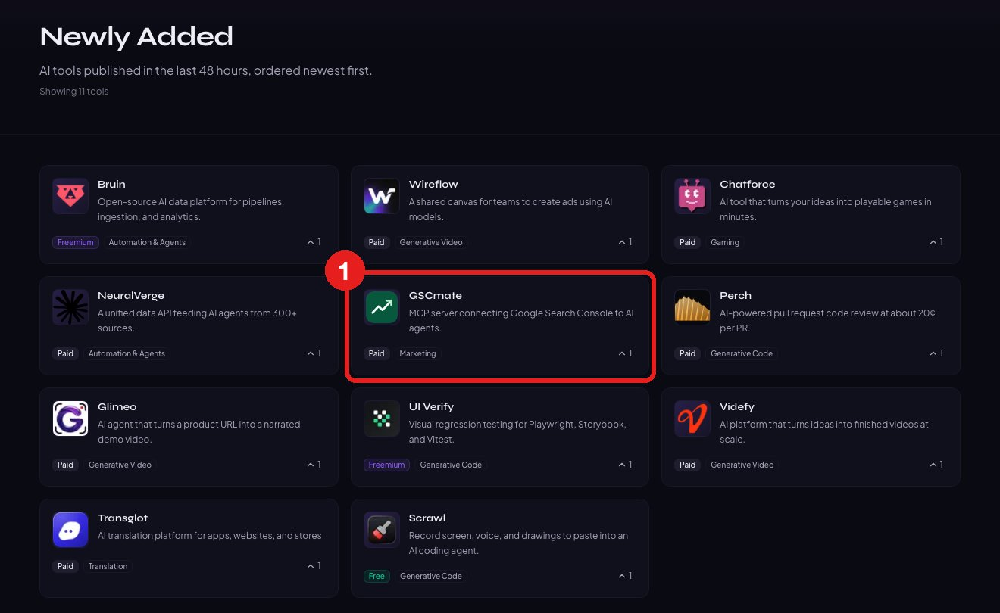
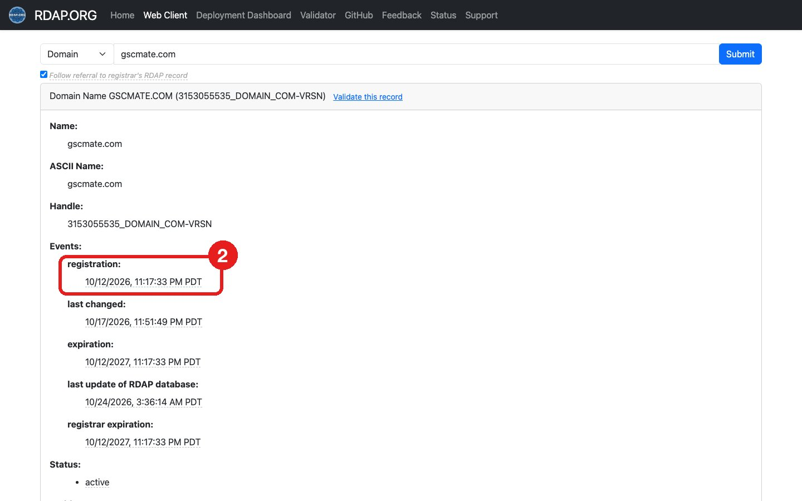
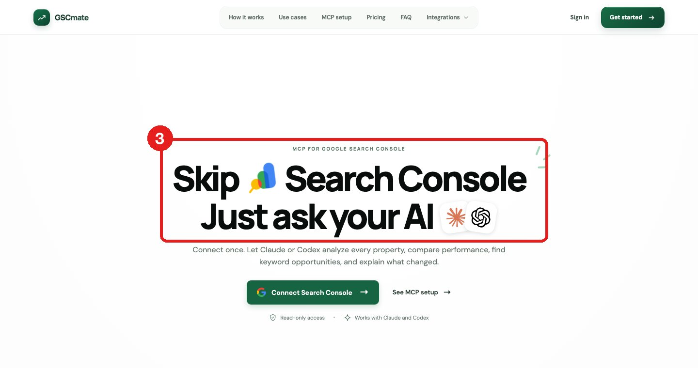

出海野路子，又更新了！这次如何通过外链，找到需求。
原来是，新站上线第一件事，会去导航站交外链。
所以，导航站的「最新提交」页，就是别人刚抢到的新需求。😄
步骤贼简单，下面演示 👇
1、打开导航站的「最新提交」页
选只看最近48小时新收录的站，平时无聊刷也能找到灵感。
2、查域名注册时间
例如，这个 http://gscmate.com，域名10月12日注册的，不到两周就上线，也交外链了
3、进官网，看它在做什么
它做的，其实就是把 Google Search Console接进Claude，ChatGPT，用 AI 直接问自己网站的SEO数据。
4、查 Google Trends
把核心词丢进查，search console mcp 这类词，曲线刚起来、竞争页面又少。
这时候，懂了吧，值得关注更进了。
数据都是公开的，仅供参考，希望对你有帮助！


